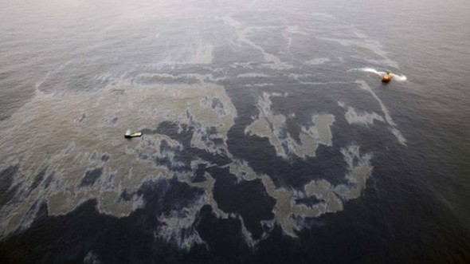

Sumário
Entendendo o que é o derramamento de petróleoQuais são os prejuízos causados pelo derramamento de petróleo?
Os métodos de limpeza
Rio de Janeiro: 18 de janeiro de 2000
Pernambuco: 27 de setembro de 2021
Os efeitos negativos que as Refinarias de Petróleo causam
Poluição por derramamento de petróleo
Já é de nosso conhecimento que uma das principais fontes de energia utilizada pelo homem é o petróleo. Ele é utilizado para vários fins, principalmente como combustível automotível, como a gasolina e o óleo diesel, e também para ser queimado no funcionamento de usinas termoelétricas. Mas o uso do petróleo não para por aí. Talvez você não saiba, mas o petróleo é muito importante para a fabricação de plásticos, tintas, borrachas sintéticas e outros tipos de produtos que são muito utilizados no nosso dia a dia.
Mas o que não é de conhecimento comum é que os hidrocarbonetos, que são elementos derivados do produto, causam a poluição de vários ecossistemas, em especial, o marinho. Além de causar enormes danos a flora e fauna local, um derramamento de petróleo pode se espalhar por enormes distâncias, alterando as características químicas, físicas e biológicas do local atingido.
As principais causas do derramamento de petróleo são acidentes com návios-petroleiros, acidentes nas plataformas de petróleo e o descarte da água que é utilizada para lavar os tanques utilizados para armazenar petróleo. Quando isso acontece, o petróleo causa uma série de prejuízos ao ecossistema local, prejudicando todo o tipo de vida que ali habita.
Além do ambiente aquático, os manguezais também são muito prejudicados por esses eventos, pois o oléo que atinge as plantas impregna no sistema radicular da planta, impedindo que a mesma absorva nutrientes e oxigênio, além de atingir algumas espécies de animais, como por exemplo, os carangueijos.
Quais são os principais prejuízos causados pelo derramamento de petróleo?
- O petróleo na superfície forma uma grande barreira que proíbe a passagem da luz solar, impedindo as plantas e algas marinhas de realizar a fotossíntese. 
-
Intoxica os animais, mata eles por asfixia, altera o seu equilíbrio térmico e prende eles no óleo.

-
Nos manguezais, os seres vivos do ecossistema são atingidos, não somente as plantas e animais são atingidos, mas também a população da região sofre problemas financeiros, pois prejudica o turismo e as atividades econômicas, como a pesca.
/i.s3.glbimg.com/v1/AUTH_59edd422c0c84a879bd37670ae4f538a/internal_photos/bs/2019/7/S/iy7zxeQ9iGwX11666VOQ/109362532-whatsappimage2019-10-21at18.50.22.jpg)
Métodos de limpeza utilizados
Para evitar esses problemas, alguns métodos de limpeza complexos são utilizados. Dentre eles, podemos citar alguns, como por exemplo:
- Barreiras de contenção: buscam impedir que o petróleo se espalhe por mais áreas.
- Skimmer: equipamento que garante a retirada do petróleo da água por meio de um dispositivo captador e um sistema que garante o bombeamento do óleo para um local de armazenamento. Normalmente o skimmer é acompanhado pelo uso da barreira de contenção.
- Dispersantes químicos: produtos químicos são utilizados com o objetivo de remover o óleo da superfície da água.
- Biorremediação: técnica que se baseia na degradação do petróleo por meio do estímulo da atividade de micro-organismos capazes de metabolizar os constituintes do petróleo. Em alguns casos, esses micro-organismos já estão presentes no local; em outros, é necessário inseri-los no meio.
- Remoção manual: é feita em ambientes costeiros, sendo utilizados objetos como pás, latas, carrinhos de mão, entre outros.
- Remoção mecânica: é também realizada em ambientes costeiros, e a retirada do óleo ocorre por meio de veículos e máquinas."
Rio de Janeiro: 18 de janeiro de 2000
No dia 18 de janeiro de 2000, um vazamento de óleo de grandes proporções foi o responsável por mudar o cenário da Baía de Guanabara e contaminar grande parte do ecossistema de mangues no entorno. Um duto da Petrobrás que ligava a Refinaria Duque de Caxias (Reduc) ao terminal Ilha d’Água, na Ilha do Governador, rompeu-se antes do raiar do dia, provocando um vazamento de 1,3 milhão de litros de óleo combustível nas águas da baía. A mancha se espalhou por 40km².
O episódio entrou para a a história como um dos maiores acidentes ambientais ocorridos no Brasil. O vazamento afetou milhares de famílias que viviam da pesca e de atividades ligadas ao pescado. Na época, a Petrobras pagou uma multa de R$ 35 milhões ao Instituto Brasileiro do Meio Ambiente e dos Recursos Naturais Renováveis (Ibama) e destinou outros R$ 15 milhões para a revitalização da baía.
Pernambuco: 27 de setembro de 2021
Na segunda (27), um trabalhador morreu ao fazer a manuntenção em um equipamento na Refinaria Abreu e Lima
De acordo com o auditor fiscal do trabalho Carlos Silva, o trabalhador estava fazendo uma inspeção em uma válvula de alta pressão de vapor,Esse equipamento fica localizado na Unidade de Destilação Atmosférica, onde é feita a separação do diesel e outros componentes derivados do petróleo. A válvula não suportou a pressão da linha de vapor e explodiu, assim matando o trabalhador.
Efeitos negativos causados pelas refinarias de petróleo
Além de poluir os mares e gerar grandes quantidades de poluentes as Refinarias causam maléficios para a saúde de humanos, a seguir algumas doenças causadas pelas Refinarias:
- Poluição Atmosférica:
- Irritação nos olhos, Paradas Respiratórias, Enfisema Pulmonar, Anemia, Doenças Neurológica, etc.
- Poluição Sonora:
- Perda gradativa da audição, Interfêrencia no sono, Hiperstímulo da glândula tireóide, etc.
- Efluentes Líquidos:
- Sonôlencia, Amnésia, Convulsões, Hiperexcitabilidade, Morte, etc.
- Resíduos Sólidos:
- Danos no sistemaimunológico, Alterações metabólicas, Intoxicação por alimentos contaminados com metais pesados, etc.